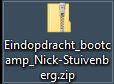

Het zip-bestand
En lever dit allemaal in, in een .zip-bestand
Dus geen .rar of .7z bestand
Het zip-bestand


Maximaal 50mb
Als je niet op de inleverknop drukt, is je eindopdracht niet ingeleverd.
Uit eindopdracht Bootcamp
En lever dit allemaal in, in een .zip-bestand
Dus geen .rar of .7z bestand
Maximaal 50mb
De documenten zijn voorzien van een inhoudsopgave en inleiding. Ze zijn verzorgd en hebben een titelblad met datum en naam van de auteur. De documenten bevinden zich ook op een logische plaats in het inleverbestand.
In de documenten zitten geen verwijzingen naar afbeeldingen, diagrammen of modellen buiten het document zelf. Ook zijn de diagrammen en afbeeldingen goed leesbaar en tekstueel uitgelegd of beschreven. Een goed uitgangspunt hier is wanneer het document geprint wordt, deze nog steeds volledig beoordeeld kan worden.